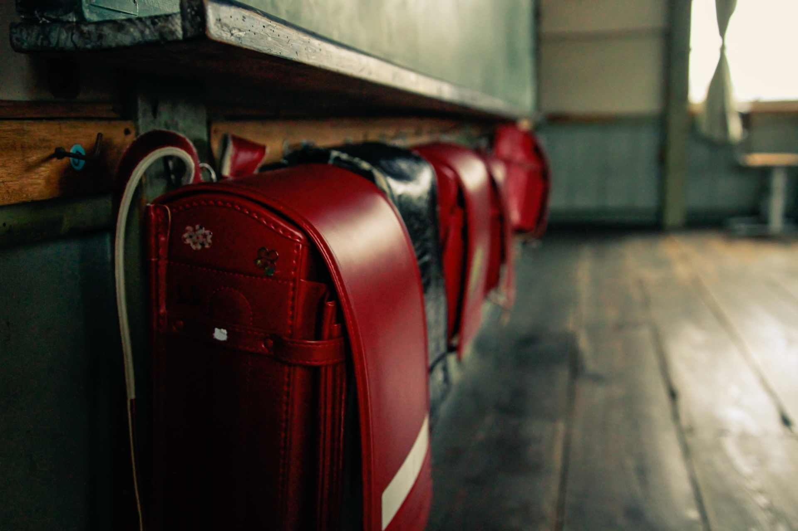
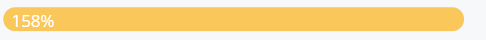

子どもたちといっしょに、小学校に花を植え、被災した街を明るくしたい！
前年度の洪水で荒れたままの状態の小学校。明るい雰囲気を取り戻したい！
一緒にプロジェクトを応援してください！



🌱 現在：6000万円
避難所の状況報告です。物資の足りてないのは過疎化が進んだ地域。お年寄りや子どもに疲れが見え始めています。災害が起こって唯一良かったなと思う事は、地域の人々の助け合いが進んだこと。田舎といえども離れていたので密なやり取りは途絶えがちでしたが、一か所に集まったことにより助けやすく頼りやすいコミュニティが生まれています。
10年たった校舎は、ガランとしてさみしい雰囲気。
この場所をまた利用できるようにしたい！
卒業生と在校生みんなが協力して、全国から植物を集め、育てるプロジェクトをはじめました。
10年たった校舎は、ガランとしてさみしい雰囲気。
この場所をまた利用できるようにしたい！
卒業生と在校生みんなが協力して、全国から植物を集め、育てるプロジェクトをはじめました。